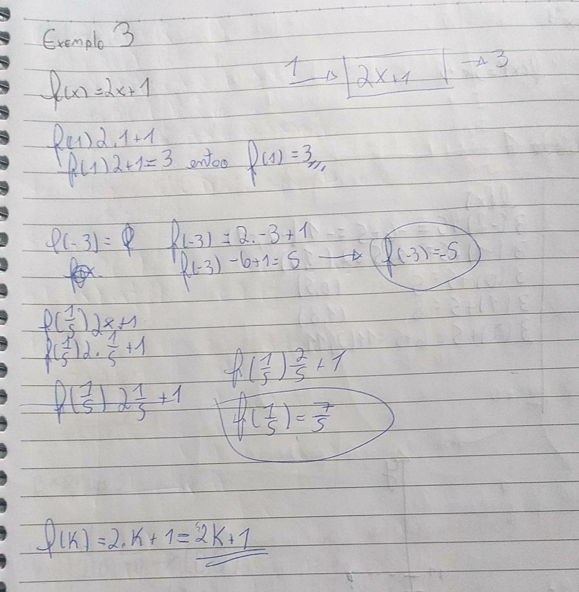
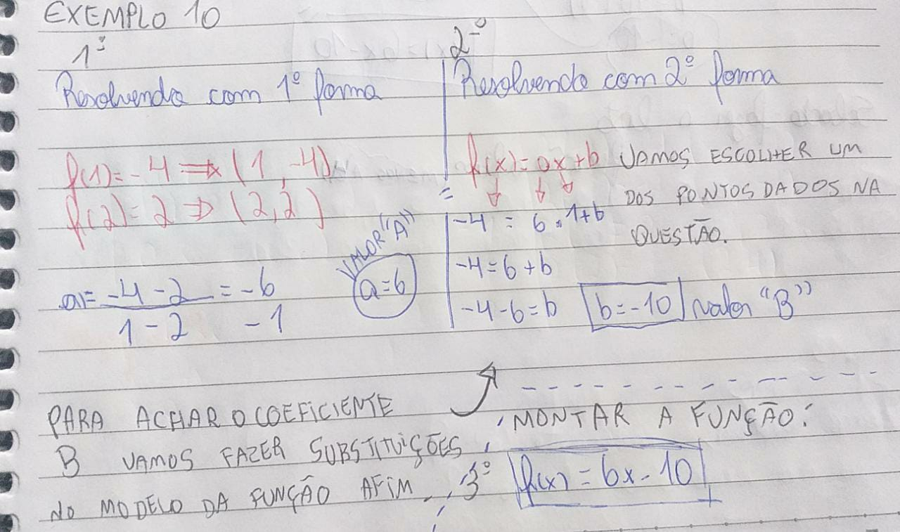

DIFICULDADES
Agora você verá os conteúdos em que eu obtive dificuldades.
1. FUNÇÕES
1.1 Noção de Função
O que é uma Função?
Funções matemáticas são expressões numéricas e algébricas (números e letras),
elas possuem dois lados separados pelo sinal de igual (=) e obedecem uma lei de formação.
Em um de seus lados aparece o “f(x)”, conhecido popularmente como “y”. Do outro lado, temos
um conjunto de valores rodeando a incógnita “x”. Esses valores são chamados de regra matemática.
Ser uma função significa ter dependência, ou seja, o valor de f(x) ou y se modifica à medida que
modificamos o valor de x. Por isso, as soluções para as funções vêm em pares ordenados (x, y).
Confira abaixo alguns exemplos:
| Exemplo 1. |
Exemplo 2. |

| 
|
1.2 Máquina de Funções
Como podemos entender melhor?
Uma ideia muito interessante para ajudar a entender esse conceito matemático é pensar
transforme-se em uma função semelhante a uma máquina que converte números. Isso significa que cada número
inserido é alterado para obter um valor e repetir a saída, com isso temos números em um conjunto de entrada e
números em um conjunto e exportar de um modo geral, o número que a máquina pode inserir é real.
Mas é possível utilizar qualquer tipo de operação dentro desta máquina e combinações entre
elas: adição, subtração, multiplicação, divisão, potências, raízes, razões trigonométricas, logaritmos, etc...
Confira abaixo alguns exemplos sobre a máquina de funções:
| Exemplo 1. |
Exemplo 2. |

| 
|
2. FUNÇÃO CONSTANTE E FUNÇÃO AFIM
2.1 Função Constante
que é uma Função Constante?
A função constante é a função cuja lei de formação é f(x) = k. A função constante é um caso particular
de função. Dados o domínio e o contradomínio no conjunto dos números reais, a função constante é a função
que possui lei de formação igual a f(x) = k, em que k é um número real. Essa lei de formação nos mostra que
independentemente do valor da variável x, a imagem da função será igual a k. Assim, ao realizar a representação
gráfica da função constante, encontraremos uma reta paralela ao eixo horizontal.
Confira abaixo alguns exemplos:
| Exemplo 1. |
Exemplo 2. |

| 
|
2.2 Função Afim
O que é uma Função Afim?
A função afim, também chamada de função do 1º grau, é uma função f : ℝ→ℝ, definida como f(x) = ax + b,
sendo a e b números reais. As funções f(x) = x + 5, g(x) = 3√3x - 8 e h(x) = 1/2 x são exemplos de funções afim.
Neste tipo de função, o número a é chamado de coeficiente de x e representa a taxa de crescimento ou taxa de
variação da função, já o elemento b é chamado de termo constante.
Como descobrir uma Função Afim?
Pela definição de função afim, temos que ela é determinada pela seguinte expressão f(x)=ax+b, ou seja, para
determinar
tal função, basta encontrarmos os coeficientes a, b. Veremos que para descobrir estes coeficientes precisamos
apenas de
dois pontos e o valor da função nesses pontos.
Confira abaixo alguns exemplos:
| Exemplo 1. |
Exemplo 2. |
| 
| 
|
RETOMAR PARA A PÁGINA INICIAL